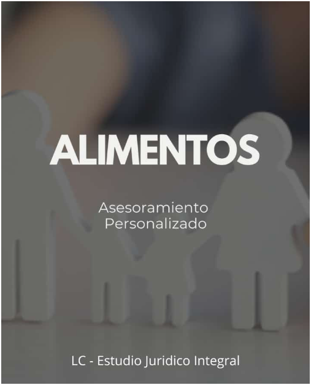
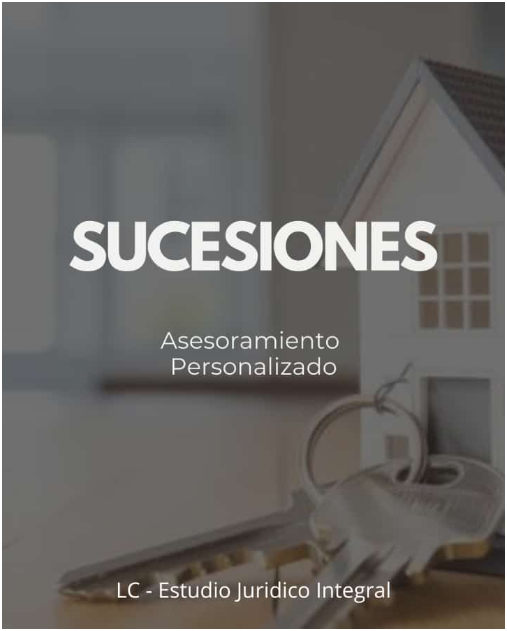

Especialidad Principal
Derecho de Familia
Alimentos, cuidado personal, régimen de comunicación y divorcios.
Matrícula 8007 · Colegio de Abogados de Salta
Dra. Lorena Alejandra Crespo — asesoramiento jurídico personalizado para casos de familia y sucesiones, con acompañamiento en cada instancia del proceso.
Atención presencial con cita previa en Zona Sur, Salta Capital, y por videollamada.

Antes de escribir
Matrícula 8007
Colegio de Abogados de Salta
Ejercicio profesional en Salta Capital, con dedicación exclusiva al derecho civil y de familia.
Dos modalidades
Presencial y videollamada
Atención en sede con cita previa, o por videollamada si no podés acercarte.
Acompañamiento constante
Información de cada novedad
Notificación periódica de las novedades procesales relevantes y estado del expediente.
Áreas de práctica
El estudio concentra su trabajo en el Derecho de Familia y Sucesiones. Otras áreas se atienden de forma complementaria.

Alimentos, cuidado personal, régimen de comunicación y divorcios.

Declaratorias de herederos, particiones y trámites sucesorios.
- Divorcio sin bienes.
- Compensación económica.
- Liquidación de la sociedad conyugal.
- Cuidado personal.
- Adopción.
- Responsabilidad parental.
- Régimen comunicacional.
- Restricción de capacidad.
- Tutela - Curatela - Guarda judicial.
- Filiación.
Acompañamiento y asesoramiento en situaciones de violencia en el ámbito familiar.
Reclamos de deudas y ejecución de obligaciones dinerarias.
Trámites y presentaciones ante organismos de la administración pública.
- Desalojos.
- Prescripción adquisitiva.
- Contratos (cumplimiento de contratos).
- Carta documento.
- Elaboración de contratos.
- Asistencia y asesoramiento.
- Audiencia de mediación.

Sobre el estudio
LC · Estudio Jurídico Integral trabaja de manera directa y personalizada: una sola interlocutora para tu caso, con información desde el primer día y sin intermediarios.
Los casos se encaran priorizando el bienestar de los menores involucrados: esa mirada ordena las decisiones y la estrategia.
Se informa cada novedad del juzgado, sea o no relevante: vas a saber siempre en qué estado está tu expediente.
No se dan plazos estimados porque cada caso tiene su propio tiempo y su propia estrategia. Preferimos explicar el proceso antes que forzar una respuesta.
Si estás dudando si consultar
En temas de familia y sucesiones lo más difícil suele ser decidir cuándo dar el primer paso. La consulta sirve para eso: para ordenar los hechos, saber qué se puede plantear hoy y qué conviene esperar.
Se explica qué se presenta, por qué y con qué objetivo, en lenguaje claro y sin tecnicismos innecesarios.
Lo que se cuenta queda entre la profesional y el consultante. Es un deber del ejercicio, no un gesto comercial.
Antes de avanzar vas a saber qué etapas tiene el caso, qué se espera de cada una y cómo se te va a mantener informado.
Si después de esa conversación decidís no avanzar, no hay ningún compromiso. Una consulta no obliga a iniciar un expediente.
Primer contacto
Completá el formulario y el tipo de consulta para que la respuesta llegue directamente orientada a tu situación. Se responde por teléfono o WhatsApp.
Antes de agendar
Las consultas y reuniones —presenciales o virtuales— son servicios profesionales arancelados. El valor se informa antes de confirmar la cita y debe abonarse para reservar el turno.
Esto permite brindarte una atención personalizada, con el tiempo y la dedicación que tu caso requiere.
Consultar por una citaDónde atiende
LC · Estudio Jurídico Integral
Avda. John F. Kennedy 2095
Zona Sur, Salta Capital — Salta, Argentina